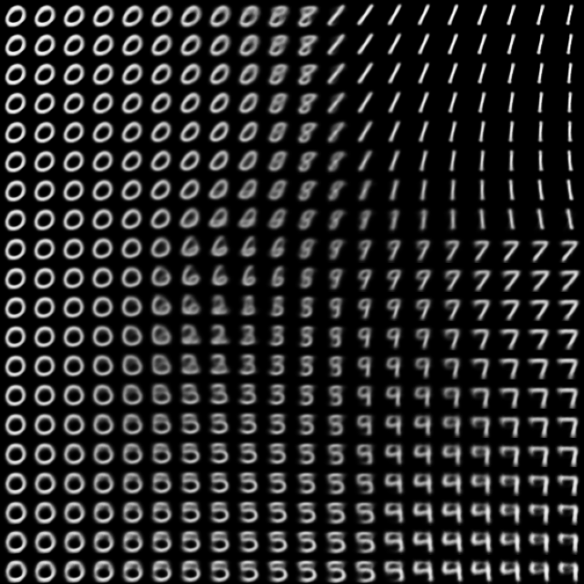

Variational Autoencoder (VAE) Example using MNIST
Posted on вт 18 травня 2021 in Machine Learning
Вариационный Автоенкодер (англ. Variational Autoencoder - VAE) это тип нейронной сети, который используется для нахождения способа эффективного кодирования через обучение без учителя.
Вариационный автокодировщик состоит из двух нейросетей. Первая сжимает входные данные, переводя их в векторное пространство более низкой размерности чем входные данные. Вторая, векторы из этого пространства, восстанавливает в данные подобные исходным. Цель обучения - наилучшим способом сжимать и восстанавливать данные.
Автокодировщики обладают двумя интересными для нас свойствами:
- Способность сжимать входные данные (снижение размерности данных)
- Возможность генерировать новые данные из сжатого представления (генеративная модель)
Рассмотрим подробнее каждое свойство.
Данные
В данной статье используется, ставший уже классическим, датасет MNIST. Он состоит из 70 000 изображений рукописных цифр (от 0 до 9). Каждое изображение имеет разрешение 28 х 28 пикселей. Цвета представленны оттенками серого. Датасет содержит порядка 7000 примеров написания каждой цифры. Нетрудно посчитать, что каждое изображение состоит из 784 пикселей, каждый представлен одним числом. И следовательно информация о том, какая из 10 цифр нарисована на изображении содержится в этих 784 числах. Очевидно, для того чтобы закодировать информацию о числе нужно намного меньше данных.
Сжатие данных
Модель случайного скрытого вектора выглядит как \(N(z|\mu(X, \theta), \sigma(X, \theta))\). Где \(\mu\) и \(\sigma\) это функции с обучаемыми параметрами \(\theta\), в нашем случае это нейросети.
В вариационном автокодировщие скрытый вектор моделируется с помощью многомерного нормального распределения \(N(\boldsymbol{\mu}, \boldsymbol{\Sigma})\). Предполагается, что компоненты скрытого вектора \(\boldsymbol{z}\) статистически независимы, следовательно ковариационная матрица \(\boldsymbol{\Sigma}\) принимает диагональный вид. В процессе обучения автокодировщик оценивает плотности вероятностей для компонентов скрытого вектора. Другими словами праметры многомерного нормального распределения как функции фходных данных моделируются нейронной сетью. При сжатии на выходе мы получим параметры многомерного нормального распределения - математическое ожидание \(\mu\) и дисперсию \(\sigma\).
У интерпретации многомерного скрытого вектора есть большие трудности. В процессе обучения каждое измерение скрытого вектора начинает отвечать за случайный аспект написания цифры. Это может быть наклон, толщина линии, пропорции, или что-то другое. Это можно определить только экспериментально на уже обученной сети.
Второе свойство - автокодировщик может генерировать новые примеры данных по заданному сжатому представлению. Таким образом мы можем создать примеры похожие на данные, на которых обучался автокодировщик.
В следующем примере вы можете сами нарисовать число и увидеть как нейросеть сжимает изображение и восстанавливает его.
|
|
(0.0, 0.0) |
|
Генерация данных
Используя энкодер мы получили отображение цифр из валидационного набора на пространство кодов. Каждая точка изображения соответствует двумерному коду. В следующем примере мы увидим как скрытое двумерное векторное пространство связано с изображением цифры.
| Code | ||
|---|---|---|
|

|
(0.0, 0.0) |
|